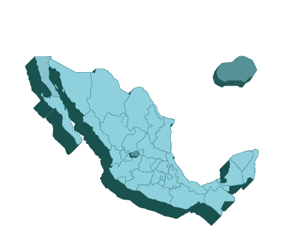
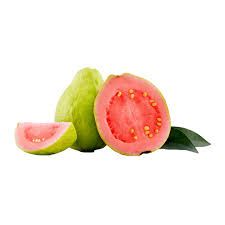
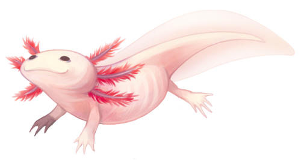

CASAS Y DEPARTAMENTOS A UN CLIC DE DISTANCIA
LUGARES IDEALES EN TODO MÉXICO
By KING AGS

Vive una gran experiencia
Hospedate en los mejores lugares de aguascalientes
|
¿SABIAS QUE?
Aguascalientes se caracteriza por ser un estado lleno de folclore y tradición, y como muestra de
ello, la famosa Fiesta de San Marcos, una de las más emblemáticas y a la que acuden miles de personas,
tanto nacionales como extranjeras, cada año entre los meses de abril y mayo para vivir de cerca el ambiente de
algarabía que se respira.

|

Aguascalientes
Ciudad de la gente buena
|

Recibe su nombramiento como Pueblo Mágico en noviembre de 2012. Ubicado en el estado de Aguascalientes, lleva el nombre de Calvillo, en honor a su benefactor. Su origen se da con el establecimiento de una congregación de indios nahuas de San José de Huejúcar, que significa “lugar de sauces”.
Calvillo tiene una tradición artesanal, por lo que se puede visitar la fábrica de velas con originales diseños y aromas, la bisutería orgánica con una gran variedad de collares, pulseras y aretes elaborados con frutos y semillas secas y de paso comprar unos ricos quesos artesanales.
El principal atractivo de la ciudad es ser el Polo Industrial de México, ya que se distingue por su gran desarrollo comercial y un importante centro educativo y de atracción para la inversión extranjera. Su ubicación hace que sea un punto clave para México y para la zona sureste de Estados Unidos.
A Monterrey se le considera el polo industrial y de negocios de México, así como un importante centro educativo. Es hogar de destacados grupos empresariales y reconocidas universidades, y un destino en donde se han establecido con éxito más de 4,100 empresas extranjeras.
El atractivo principal en Cancún son sus playas majestuosas. La región está conformada de 17 kilómetros de arena blanca y brillante agua turquesa. Su litoral está compuesto por una infinita y espectacular vida marina: un gran tesoro para los adeptos al snorkel y el buceo.
Playa linda. En Playa Linda encontrarás la mejor vista del mar caribe, esta se encuentra conectada al canal Sigfrido lo cual da lugar a una increíble vista de aguas color turquesa que acompañado de arena fina y suave al tacto te ayudarán a vivir una experiencia memorable en Cancún.
Xochimilco tiene particular importancia por la existencia de las chinampas. Tienen origen en una técnica agrícola mesoamericana que fue desarrollada y compartida por varios pueblos del Valle de México. Tras la desecación de los lagos del Anáhuac, solo Xochimilco y Tláhuac conservan la chinampería.
La principal actividad para hacer en Xochimilco es pasear por los canales en trajinera, pero también hay otros lugares y actividades para descubrir. De hecho, hay dos zonas diferentes: los canales turísticos y la zona natural protegida.
